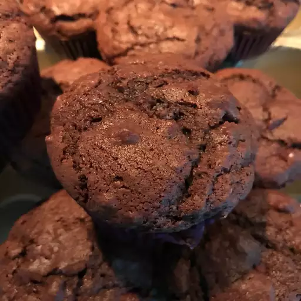

Back to menu
Chocolate Chip Muffins

Description
Very, very chocolate-y! Great with a glass of milk.
Ingredients
- 6 (1 ounce) squares semisweet chocolate
- ⅓ cup unsalted butter
- ¾ cup buttermilk
- ½ cup white sugar
- 1 egg
- 1 ½ teaspoons vanilla extract
- 1 ⅔ cups all-purpose flour
- 1 teaspoon baking soda
- ½ teaspoon salt
- 1 cup mini semi-sweet chocolate chips
Steps
- Preheat the oven to 400 degrees F (205 degrees C). Line 12 muffin cups with papers.
- In a small saucepan over low heat, melt the semisweet chocolate together with the butter. Let stand until cooled, about 10 minutes.
- Lightly beat the egg. In a small bowl, stir together the chocolate-butter mixture with the buttermilk, sugar, egg, and vanilla, until blended well.
- In a large bowl, stir together flour, soda, and salt. Make a hole in the center of the dry ingredients, pour in the chocolate mixture, and stir until just combined. Stir in the mini chocolate chips. Spoon the batter into the lined muffin cups.
- Bake at 400 degrees F (205 degrees C) for 20-25 minutes or until a toothpick inserted in the center of a muffin comes out clean. Remove muffin tin from oven and let stand at least 5 minutes, before removing the muffins and letting them cool on a wire rack. Serve warm or cooled; can be frozen as well.